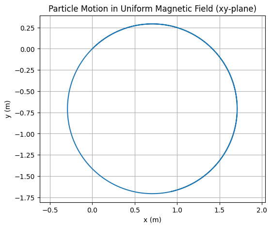
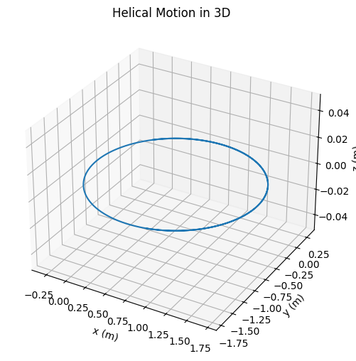
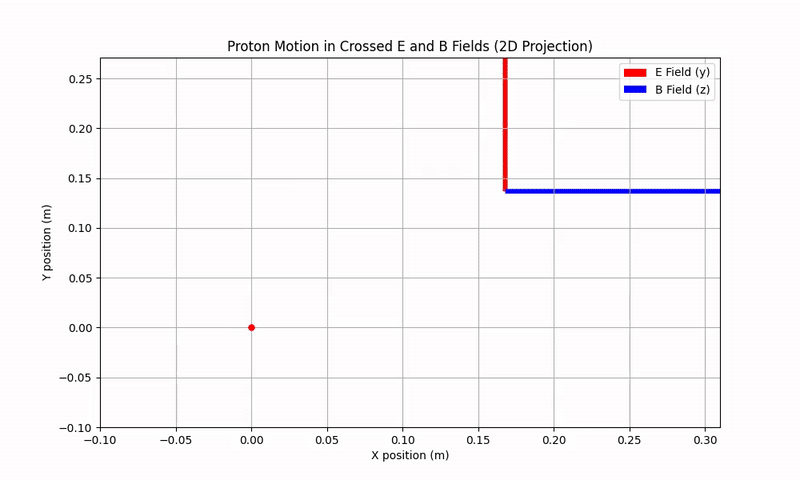

Problem 1
Simulating the effects of the Lorentz Force
Mathematical Definition
The Lorentz force describes the combined effect of electric and magnetic fields on a charged particle:
Where: - \(\vec{F}\) is the force (N) - \(q\) is the particle charge (C) - \(\vec{v}\) is the particle velocity (m/s) - \(\vec{E}\) is the electric field (V/m) - \(\vec{B}\) is the magnetic field (T)
Key Components
1. Electric Field Contribution
- Always parallel to \(\vec{E}\) field
- Accelerates charges along field lines
2. Magnetic Field Contribution
- Perpendicular to both \(\vec{v}\) and \(\vec{B}\)
- Does no work (\(\vec{F}_B \cdot \vec{v} = 0\))
Special Cases
Crossed Fields (\(\vec{E} \perp \vec{B}\))
Produces characteristic drift motion:
Pure Magnetic Field
Leads to circular motion with cyclotron frequency:
Radius of gyration: $$ r_c = \frac{mv_\perp}{qB} $$
Applications
1. Particle Accelerators
- Magnetic fields bend particle trajectories
- Electric fields provide acceleration
- Relativistic correction: $$ \vec{F} = \frac{q}{c}(\vec{v} \times \vec{B}) \quad \text{(for } v \approx c\text{)} $$
2. Mass Spectrometers
- Separation by mass-to-charge ratio (\(m/q\))
- Workspace equation: $$ \frac{m}{q} = \frac{B^2r^2}{2V} $$
 
3. Plasma Confinement
- Tokamaks use toroidal magnetic fields
- Magnetic mirror effect: $$ \mu = \frac{mv_\perp^2}{2B} \quad \text{(magnetic moment)} $$
4. Hall Effect Devices
- Measure carrier density: $$ n = \frac{IB}{qV_H t} $$
Numerical Simulation
The Python simulation demonstrates:
-
Initial Conditions: $$ \vec{v}_0 = v_0\hat{x}, \quad \vec{E} = E_0\hat{y}, \quad \vec{B} = B_0\hat{z} $$
-
Equations of Motion: $$ \frac{d\vec{v}}{dt} = \frac{q}{m}(\vec{E} + \vec{v} \times \vec{B}) $$ $$ \frac{d\vec{r}}{dt} = \vec{v} $$
-
Numerical Integration: Using Runge-Kutta 4th order method for accuracy: $$ k_1 = f(t_n, y_n) $$ $$ k_2 = f(t_n + \frac{h}{2}, y_n + \frac{h}{2}k_1) $$ $$ k_3 = f(t_n + \frac{h}{2}, y_n + \frac{h}{2}k_2) $$ $$ k_4 = f(t_n + h, y_n + hk_3) $$ $$ y_{n+1} = y_n + \frac{h}{6}(k_1 + 2k_2 + 2k_3 + k_4) $$
Visualization Features
The enhanced simulation shows: - Cycloid trajectory from crossed fields - Real-time particle information: $$ \vec{r}(t) = (x(t), y(t)) $$ $$ \vec{v}(t) = (v_x(t), v_y(t)) $$ - Field vectors and drift velocity: $$ \vec{v}_d = \frac{E_0}{B_0}\hat{x} $$
Animation
